Les systèmes d'exploitation
Les Systèmes de fichiers
3A - Cursus Ingénieurs - Dominante Informatique et Numérique
CentraleSupelec - Université Paris-Saclay - 2025/2026
CentraleSupelec - Université Paris-Saclay - 2025/2026

Le stockage secondaire
- Le stockage secondaire conserve des programmes et des données.
-
L'OS masque la complexité et la diversité des unités de stockage
(matériel, système de fichiers, ...) grâce à:-
Une vue logique des données :
- fichiers: unité de stockage logique
- répertoires: classement arborescent
- volumes montés: vue globale des systèmes de fichiers
-
Une organisation physique des espaces de stockage :
- découpage en blocs
- affectation et libération de blocs
-
Un système d'entrées/sorties (
non traité dans ce cours ) :- gestion du caches, algorithmes d'optimisation des accès,
- pilotes gérant les communications avec les périphériques
-
Une vue logique des données :
La notion de fichier
-
Fichier
- une collection nommée d'information accessibles via un périphérique.
-
Unité logique
- indépendante du support physique (périphérique)
- abstraction des propriétés physiques
-
Type de fichier
- code source, données, bibliothèque, exécutable, ...
- généralement indiqué par son extension
- un type de fichier $\to$ une structure spécifique
La notion de fichier
Exemples
-
Fichiers texte:
.txt - données textuelles à l'usage de l'utilisateur humain
- succession de caractères ...
-
Fichiers source:
.c ,.java , ...- fourni par un humain pour être traité par la machine
- composés d'instructions ...
-
Exécutable:
.exe , ...- construits par un compilateur à partir d'un fichier source
- succession d'octets ...
File Control Block - FCB
Structure de données de l'OS pour stocker
les informations nécessaires
à la gestion des fichiers
à la gestion des fichiers
| Nom | indépendant de l'OS, lisible |
| Identifiant | numérique, unique, pour l'OS |
| Type | extension ou en-tête de fichier |
| Emplacement | pointeur sur un périphérique |
| Taille | en octets ou en blocs |
| Protection | lecture, écriture, exécution ... |
| Date(s) | création, modification, accès ... |
| Utilisateur | propriétaire du fichier |
| ... |
Protection
-
Partage de fichiers
- rendre accessible à un utilisateur B un fichier de l'utilisateur A.
-
Politique de protection
-
définir qui peut accéder à quel(s) fichier(s)
- identifiant utilisateur $\to$ identifiant processus
- contrôle d'accès dans le FCB
- spécifier pour chaque fichier la liste des sujets autorisés à effectuer un type d'accès
-
définir qui peut accéder à quel(s) fichier(s)
Techniques de protection
- Liste de contrôle d'accès (ACL)
- utilisateur $\to$ droits
- l'ensemble des utilisateurs doit être connu a priori
- taille du FCB grossit avec le nombre d'utilisateurs
-
Mot de passe
- 1 mot de passe par fichier $\times$ type d'accès (
r ,w , ...)
- 1 mot de passe par fichier $\times$ type d'accès (
- pas très pratique $\to$ peu utilisé
-
Classes d'utilisateurs
- Exemple: Propriétaires vs Autres
Techniques de protection
-
Notion de groupe
-
Ensemble de groupes définis a priori
- Ex:
admin ,dev-disque ,user-disque ,dev-ram ,user-ram
- Ex:
-
FCB: 1 utilisateur + 1 groupe (propriétaires)
- Ex:
toto.c ,u=batman ,g=dev-disque
- Ex:
-
Utilisateur $\to$ liste de groupes
- Ex:
robin ,g=[user-disque,dev-ram]
- Ex:
robin n'a pas accès àtoto.c
-
Ensemble de groupes définis a priori
-
Dans les systèmes POSIX on distingue :
- 3 modes (lecture, écriture, exécution)
- 3 catégories de sujets (le propriétaire, son groupe et le reste des sujets)
Techniques de protection
-
Dans les systèmes POSIX on distingue :
- 3 modes (lecture, écriture, exécution)
- 3 catégories de sujets (le propriétaire, son groupe et le reste des sujets)
-
Exemple $\to$ Unix
- 3 $\times$ 3 bits par fichier
Opérations sur un fichier
-
Appels systèmes de base
- Création: allocation espace + entrée répertoire
- Lecture: pointeur de lecture
- Écriture: pointeur d'écriture
- Repositionnement: déplacer un pointeur
- Suppression: retrait de l'entrée dans le répertoire
- Troncature: vider mais garder l'entrée
-
Opérations composées
- Ex: copie, renommage
- effectuées à partir des appels systèmes de base
Ouverture de fichier
-
Problème
- Nécessité d'accéder au FCB à chaque opération sur le fichier
- Le FCB est stocké dans le répertoire du périphérique
- Très coûteux en accès disque (donc en temps)!
-
Solution
- L'appel système
open permet de charger le FCB en mémoire. - L'OS impose que tout accès à un fichier soit précédé d'une ouverture.
Table des fichiers ouverts
-
La table des fichiers ouverts de l'OS contient l'ensemble
des FCB des fichiers ouverts.- ouverture $\to$ chargement du FCB + ajout dans la table
- fermeture $\to$ retrait de la table
- les FCB sont chargés en RAM
- pas d'impact sur le fichier!
-
Gestion par l'OS
- implicite $\to$
open implicite au premier accès - explicite $\to$ exception si le fichier n'a pas été ouvert avant
- une table de fichiers ouverts globale avec compteurs
- une table par processus $\to$ fermeture à la terminaison
- implicite $\to$
- possibilité d'interdire l'accès aux autres processus
Table des fichiers ouverts

Notion de répertoire
-
Le répertoire est la structure de stockage des informations
des fichiers
(les FCB) dans les supports de stockage.- entrée du répertoire $=$ identifiant du fichier et/ou nom du fichier
- contenu du répertoire $=$ FCB des fichiers
- L'OS récupère les informations sur les fichiers dans le répertoire
Structure des disques
- Disque $\to$ Structure physique
-
Partition $\to$ Structure logique (disque "virtuel)
- Base $\to$ 1 disque = 1 partition
- 1 disque = N partitions
- 1 partition = 1 ou N disques (selon OS)
Structure à 1 niveau
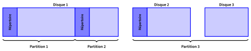
-
Répertoire $\to$ Un répertoire par partition $\to$ l'ensemble des FCB
- Nom/identifiant $\to$ FCB
- Exemple: MSDOS et Windows $\to$ 11 octets (8 nom + 3 extension)
- Exemple: Unix et Mac $\to$ 255 octets
- Nom/identifiant $\to$ FCB
- Taille du répertoire proportionnelle au nombre de fichiers
- borner le nombre de fichiers $\ldots$
- Utilisateur: organiser les fichiers, unicité de nom, $\ldots$
Structure à 2 niveaux
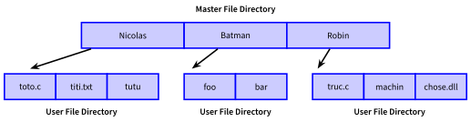-
Un répertoire par utilisateur
- Identifiant + Nom $\to$ FCB
-
Répertoire des utilisateurs: Master File Directory (MFD)
- Identifiant $\to$ User File Directory
-
Répertoire par utilisateur: User File Directory (UFD)
- Nom $\to$ FCB
Structure à 2 niveaux
- Pas beaucoup plus coûteux en taille
- Utilisateur: organiser les fichiers, unicité de nom, $\ldots$
- Taille des répertoires proportionnelle au nombre de fichiers
- Partage de fichiers
Structure arborescente
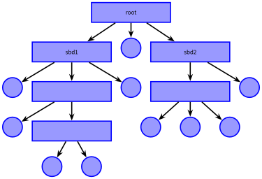
-
Généralisation de la structure à 2 niveaux:
- Répertoire racine $\to$ Master File Directory (MFD)
- Sous-répertoires, pouvant à leur tour jouer le rôle de MFD
Structure arborescente
-
Fichiers
- Bit "répertoire" dans le FCB
- Nom unique = chemin depuis la racine (chemin absolu)
-
OS $\to$ Répertoire courant (par processus)
- Recherche à partir du répertoire courant (chemin relatif)
- Recherche par défaut (PATH)
Structure en graphe
-
Généralisation de l'arbre avec des liens
- Graphe acyclique
-
Liens: référencer un fichier décrit dans un autre répertoire
- bit "lien" dans le répertoire + chemin absolu
-
Extension: duplication
- FCB recopié $\to$ copie et original indiscernables
- Compteur de liens (pour libérer l'espace sur le support physique)
Structure en graphe

Techniques de protection
-
Dans les systèmes POSIX on distingue :
- 3 modes (lecture, écriture, exécution)
- 3 catégories de sujets (le propriétaire, son groupe et le reste des sujets)
| Mode | Lecture (r) | Écriture (w) | Exécution (x) |
|---|---|---|---|
| Fichier | mode lecture | mode écriture | exécution du fichier |
| Répertoire | lister le contenu | créer, renommer et supprimer un fichier |
acceder au répertoire et à son contenu |
Notion de système de fichier
-
Comment stocker les informations (données et code) sur le disque
- Comment les organiser ?
- Comment y accéder ?
-
Différence avec la RAM
- Grande quantité de données
- Accès lent (rapport $10^3$ à $10^6$)
- Définir une norme de gestion
- Organisation de l'ensemble des données et des périphériques
- Exemple: Linux $\to$ chaque périphérique est représenté par un fichier
La vue logique
Système de fichiers (File System - FS)
-
Un système de fichiers est un ensemble
de structures de données
et de fonctions qui permettent à un OS de manipuler des fichiers.
Unité logique
- Du point de vue de l'OS, le FS doit rendre des services qui ne
dépendent
pas de son implémentation (indépendant du support physique). -
Il doit répondre à des problèmes comme :
- la diversités des supports de stockage ;
- la sécurisation des données.
La vue physique
-
Les supports de stockage sont décomposés en blocs
(les éléments atomiques du FS). - Selon les technologies, la création des blocs émule toujours celle des disques durs.
-
Le formatage de bas niveau :
- décomposer en secteurs (cylindre, piste et secteur de la piste)
- regrouper les secteurs en blocs.
Le découpage en blocs génère de la fragmentation
interne (l'espace inutilisé du dernier bloc).
interne (l'espace inutilisé du dernier bloc).


Structure d'un système de fichiers
-
Système logique
- Structure de répertoires
- FCB + gestion de la protection
-
Système physique
- Fichiers $\to$ ensemble de blocs logiques
- Bloc logique $\to$ blocs physique
- Identification des blocs physiques selon support
-
Lien $\to$ pilote de périphérique
- Appel système (ex: chargement bloc 456) $\to$ instruction matériel
Montage de répertoire
-
Le système de fichiers $\ldots$
- $\ldots$ associe des noms à des blocs logiques (fichiers)
- $\ldots$ associe des noms à des répertoires venus du disque!
-
Montage de répertoire
-
Le montage consiste à positionner un répertoire dans le FS
- Chargement du FCB par l'OS (disque $\to$ RAM)
- Attribué à l'utilisateur du processus
- Association dans le MFD au niveau logique
- Les fichiers deviennent accessibles
-
Le montage consiste à positionner un répertoire dans le FS
Implémentation
-
Sur le disque
- Bloc de démarrage (Boot Control Block) $\to$ chargement de l'OS
-
Bloc de contrôle de partition (Master File Table)
- nombre de blocs, leur taille,
- liste les blocs libres, liste les structures de descriptions de fichiers libres
- Bloc de contrôle de répertoire ou de fichier (FCB)
-
Au niveau de l'OS
- Table des partitions/répertoires montés
- Cache des répertoires
- Table des fichiers ouverts (copie des FCB)
- Blocs logiques
Accès à un fichier

 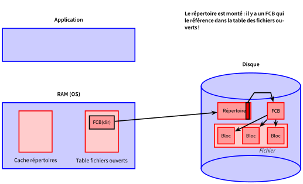
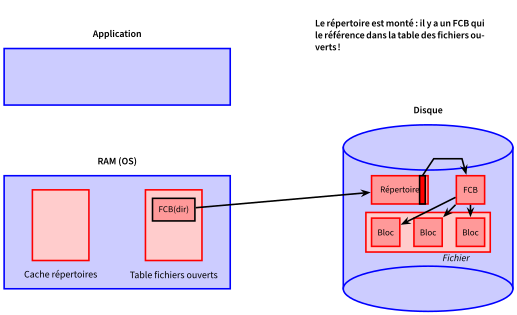


 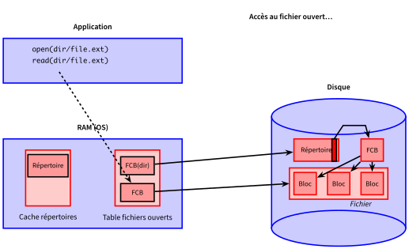
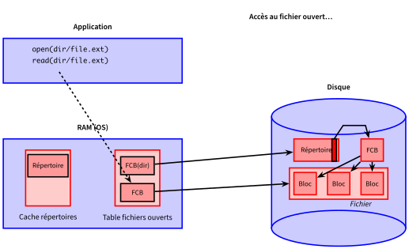
 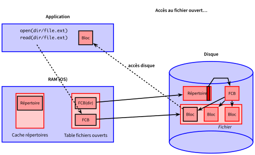
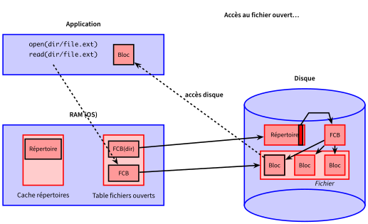
Allocation
Fichiers $\rightarrow$ blocs logiques $\rightarrow$ blocs physiques
- Choix des blocs physiques pour 1 fichier donné


-
3 méthodes possibles
- Allocation contiguë
- Allocation chaînée
- Allocation indexée
Allocation contiguë
Ranger les blocs les uns derrière les autres
 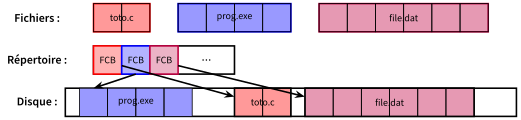
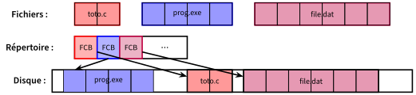
Allocation contiguë
Ranger les blocs les uns derrière les autres
-
Avantages
- Accès au bloc suivant: aucun coût
- FCB: adresse bloc départ + taille
-
Inconvénients
- Fragmentation (compactage coûteux)
- Connaître à l'avance la taille des fichiers
- Recherche d'espace libre coûteux
- Stratégies d'allocation (BestFit, FirstFit, WorstFit) à définir
Allocation chaînée
Fichier = liste chaînée de blocs
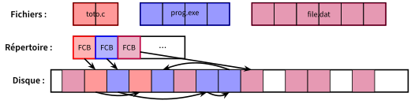
Allocation chaînée
Fichier = liste chaînée de blocs
-
Avantages
- FCB: adresse premier et dernier blocs
- Pas de fragmentation
- Fichiers taille quelconque
-
Inconvénients
- Accès séquentiel: N$^e$ bloc $\rightarrow$ N accès disques!
- Fiabilité: 1 bloc endommagé $\rightarrow$ tout le fichier est perdu
- Espace utilisé par les pointeurs (relativement négligeable)
Allocation indexée
Rassembler tous les pointeurs dans un bloc d'index
(1 bloc par fichier)
Allocation indexée
Rassembler tous les pointeurs dans un bloc d'index
(1 bloc par fichier)
-
Avantages
- Pas de fragmentation
- Accès direct (2 accès disque)
-
Inconvénients
- 1 bloc perdu par fichier
- Taille fichier limitée par taille bloc
64 bits $\times$ 64 blocs = 512o $\Rightarrow$ max = 64$\times$512o = 32 Ko
Liste chaînée de blocs d'index
- Le répertoire pointe vers un bloc d'index
- Le bloc d'index se termine par un pointeur vers un autre bloc d'index

Liste chaînée de blocs d'index
- Le répertoire pointe vers un bloc d'index
- Le bloc d'index se termine par un pointeur vers un autre bloc d'index
-
Avantages
- Pas de fragmentation
- Taille de fichier quelconque
-
Inconvénients
- $N$ blocs perdus par fichier
- Accès indirect ($\geq$2 accès disque) mais plus rapide que la liste chaînée
Indexation à plusieurs niveaux
- Le répertoire pointe vers un bloc d'index "maître"
- Le bloc maître pointe vers des blocs d'index
- $n^2$ blocs indexables au lieu de $n$
- Éventuellement, indexation sur 3 niveaux ($n^3$)

Indexation à plusieurs niveaux
- Le répertoire pointe vers un bloc d'index "maître"
- Le bloc maître pointe vers des blocs d'index
- $n^2$ blocs indexables au lieu de $n$
- Éventuellement, indexation sur 3 niveaux ($n^3$)
-
Avantages
- Pas de fragmentation
- Taille de fichier quelconque
- Accès direct (3 accès disque max + possibilité index en cache)
-
Inconvénients
- $\geq$2 blocs perdus par fichier
(même si on ne crée pas les index en trop)
- $\geq$2 blocs perdus par fichier
Schéma combiné
ex: Linux extfs
- Combiner allocation chaînée et allocation indexée
- Index = $k$ premiers blocs du fichier + ($n-k$) blocs d'indirection
- Moins de perte pour les petits fichiers
- Accès rapide


 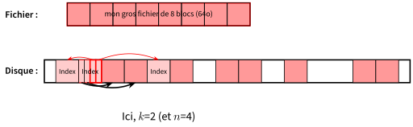
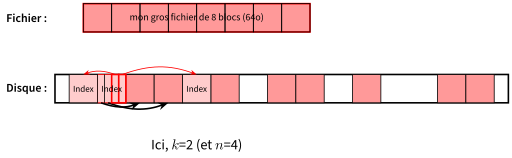


File Allocation Table (FAT)
- Utilisé sous MSDOS (Intel) et OS/2 (IBM)
- Allocation indexée
- Liste chaînée des index des blocs en début de chaque partition
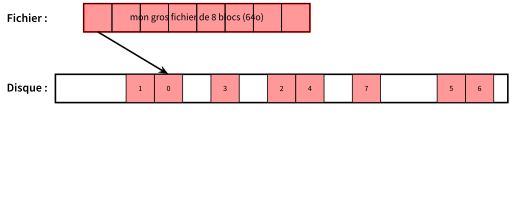
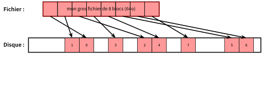


 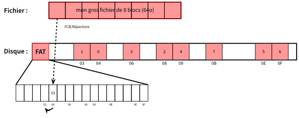
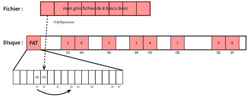
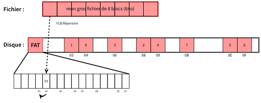
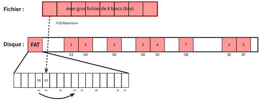

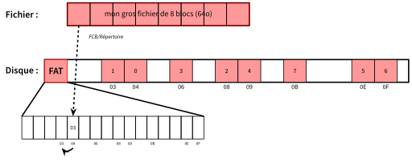
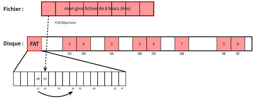
File Allocation Table (FAT)
-
Avantages
- FCB: adresse premier bloc = premier index
- Pas de fragmentation (allocation indexée)
- Allocation bloc simple
- Accès rapide (FAT chargée en cache puis accès direct disque)
-
Inconvénients
- Fiabilité: FAT perdue $\rightarrow$ disque foutu!
$\rightarrow$ doubler la FAT (sur 2 blocs distincts)
- Fiabilité: FAT perdue $\rightarrow$ disque foutu!
Ce qu'il faut retenir
- Les supports physiques sont partitionnés (découpés) en sous ensembles logiques sur lesquels un File System - FS est installé
-
L'OS rend disponible les divers FS déclarés
dans la table de montage
(on parle aussi de Volumes) -
L'OS présente une vue unifiée des différents
Volumes (FS) disponibles
(Virtual File System - VFS)
Ce qu'il faut retenir
- Fichier = point d'accès au système
- File Control Block
- Répertoire
- Ouverture de fichier
- Structure d'un système de fichiers
- Blocs logiques/physiques
- Allocations contiguë, chaînée, indexée, FAT